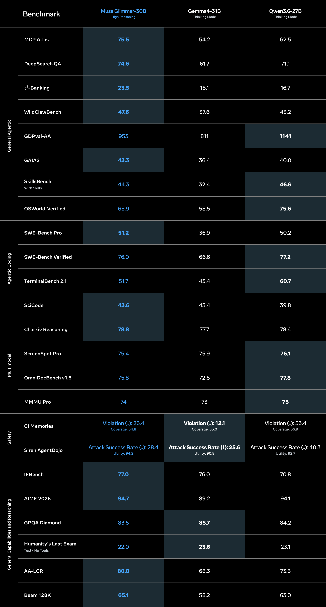
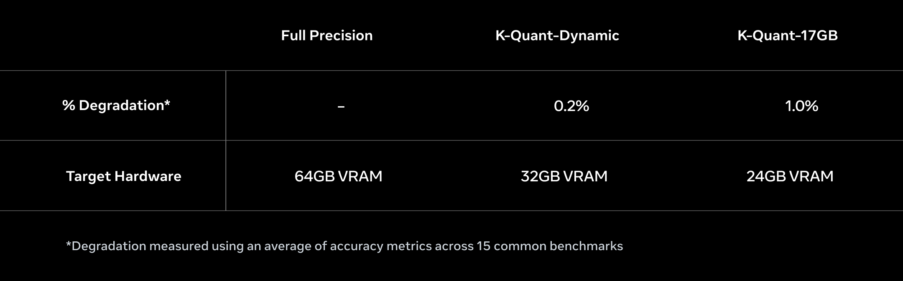

04 meta.ai 게시일 2026.08.10
메타, 단일 GPU용 Muse Glimmer 가중치 공개

메타가 Muse Glimmer를 공개하고 모델 가중치를 함께 풀었다. 이 모델은 30-billion-parameter 규모다. 메타는 로컬 에이전트 워크플로에 맞게 최적화했다고 밝혔다. 핵심은 인터넷이나 클라우드 없이도 개인 기기에서 돌릴 수 있다는 점이다.
핵심 브리핑
메타는 Muse Glimmer를 Apache 2.0 라이선스로 공개했다. 가중치는 Hugging Face에서 받을 수 있다. 개발 문서도 함께 제공한다.
- 모델 크기: 30-billion-parameter
- 라이선스: Apache 2.0
- 실행 환경: Mac 또는 PC의 single consumer GPU
- 통합 예정: llama.cpp, MLX, ExecuTorch
- 배포·실행 파트너: Ollama, LM Studio, Unsloth, Together AI, Fireworks AI, OpenRouter
- 서버 프레임워크: vLLM, SGLang
메타는 이 모델이 로컬 에이전트, 함수 호출, 로컬 코딩, LLM-as-a-judge 평가에 맞는다고 설명했다. 텍스트와 이미지가 섞인 입력도 처리한다. 100개가 넘는 언어로 학습했다고 밝혔다.
하드웨어 제약을 맞추기 위해 메타는 양자화를 적용했다. 전체 정밀도 상태에서는 55 GB가 넘는 메모리가 필요하지만, 약 4-bit 정밀도로 줄여 언어 모델 크기를 20 GB 미만으로 압축했다고 설명했다. 이 방식이면 24 GB 또는 32 GB 메모리 범위 안에서 KV cache, 이미지 인식용 인코더, speculative decoding용 drafter를 함께 돌릴 수 있다고 밝혔다.
메타는 speculative decoding도 적용했다. 작은 보조 모델이 토큰 묶음을 먼저 제안하고, 본모델이 이를 병렬로 검증하는 구조다. 메타는 이 방식이 출력 품질을 바꾸지 않으면서 생성 속도를 높인다고 설명했다.
메타는 Muse Spark의 출력을 이용한 logit distillation, 더 긴 문맥과 에이전트 중심 데이터로 mid-training, 그리고 SFT와 on-policy distillation, RL을 결합한 post-training을 거쳤다고 밝혔다.


스펙과 도입 조건
이 발표는 도입 조건이 비교적 분명하다. 로컬 실행이 핵심이므로 클라우드 API보다 하드웨어와 배포 도구 선택이 먼저다.
Muse Glimmer는 단일 소비자용 GPU를 전제로 한다. 메타는 24 GB 또는 32 GB 메모리 범위를 언급했다. 완전 정밀도 대신 양자화 모델을 써야 현실적인 실행이 가능하다.
라이선스는 Apache 2.0이라 상업적 활용 폭이 넓다. 배포 경로도 다양하다. 곧 llama.cpp, MLX, ExecuTorch 최적화가 추가되고, Ollama와 LM Studio 같은 로컬 도구에서도 돌릴 계획이다.
다만 실제 도입에는 몇 가지 조건이 붙는다. 이미지 이해까지 쓰려면 perception encoder를 함께 운영해야 한다. 속도를 높이려면 quantized drafter까지 같이 써야 한다. 기기별 성능 차이도 직접 검증해야 한다.
업계의 움직임
Hugging Face 블로그, Reddit r/LocalLLaMA, Simon Willison 블로그가 이 발표를 함께 다뤘다. 반응의 초점은 로컬 실행, 오픈 웨이트, 소비자용 GPU 호환성에 모인다. 메타는 AMD, Arm, Dell, Intel, NVIDIA와의 최적화 협력도 공개했다.
시사점과 체크포인트
우리 회사라면 데이터 반출이 어려운 업무부터 검토할 만하다. 예를 들면 내부 문서 검색, 개인 일정 보조, 코드 리뷰 초안, 민감 보고서 요약이다.
사전 점검은 인프라보다 운영 기준이 먼저다.
- 사내 PC나 VDI 환경에서 24 GB 또는 32 GB 메모리를 확보할 수 있는가
- 단말기 분실과 로컬 모델 오남용을 어떻게 통제할 것인가
- 문서와 이미지가 섞인 입력을 어느 팀이 검증할 것인가
- 양자화 뒤 정확도 저하가 우리 업무 허용 범위 안인가
기회도 분명하다. 외부 API 없이 사내 폐쇄망에서 에이전트 실험을 할 수 있다. 반면 운영 부담은 커진다. 단말 성능 편차, 버전 관리, 보안 패치, 배포 자동화 체계를 함께 준비해야 한다.
주요 용어
원문 정보
제목: Muse Glimmer: 30B-parameter model optimized for always-on local agent workflows
게시일: 2026.08.10
출처 URL: https://research.meta.ai/blog/introducing-muse-glimmer-open-agentic-model